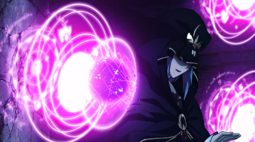
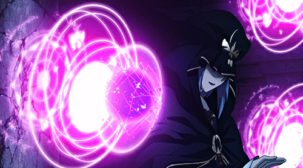
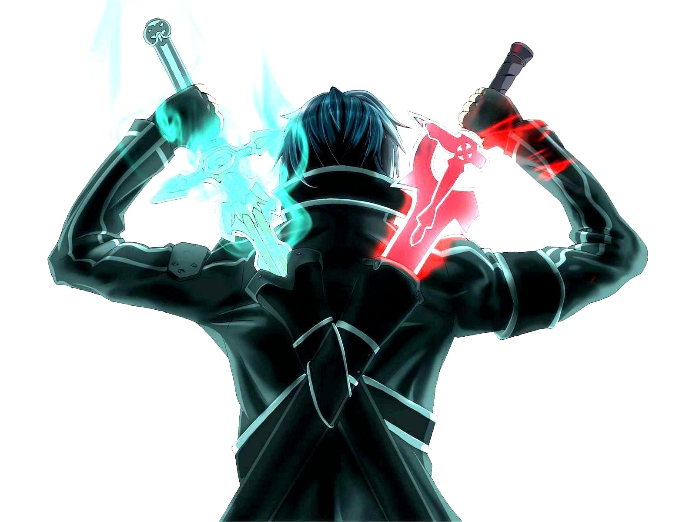
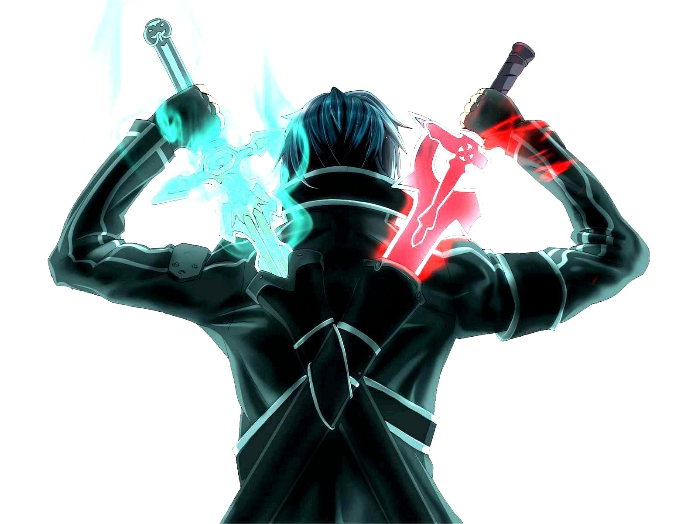

1. ПОВСЮДУ ЯРКИЕ ЦВЕТА
Аниме славится в первую очередь своим отчетливым стилем рисовки и красочностью. А яркие и теплые цвета позитивно влияют на восприятие мира, помогают видеть хорошее вокруг и вообще делают жизнь простой и приятной. 
Аниме славится в первую очередь своим отчетливым стилем рисовки и красочностью. А яркие и теплые цвета позитивно влияют на восприятие мира, помогают видеть хорошее вокруг и вообще делают жизнь простой и приятной. 
2. П — ПОЗНАВАТЕЛЬНО
Аниме — японская анимация (Капитан Очевидность mode on), а японцы очень привязаны к своим традициям и истории. Cериалы и полнометражки погружают в атмосферу и культуру страны, которая полна интереснейших фактов, историй и других клевых штук. Плюс, если смотреть аниме без дубляжа с субтитрами, есть шанс (хороший такой) выучить фразы и слова на японском.>
Аниме — японская анимация (Капитан Очевидность mode on), а японцы очень привязаны к своим традициям и истории. Cериалы и полнометражки погружают в атмосферу и культуру страны, которая полна интереснейших фактов, историй и других клевых штук. Плюс, если смотреть аниме без дубляжа с субтитрами, есть шанс (хороший такой) выучить фразы и слова на японском.>
3. ВООБРАЖЕНИЕ НЕ ОТДЫХАЕТ ПОЧТИ НИКОГДА
Чтобы понимать аниме, приходится иметь и развивать воображение, потому что добрая половина сериалов — дикие, безумные и чисто физически не укладываются в рамки сознания обычного человека. Постоянное использование воображения развивает креатив, который сегодня ценен и нужен даже если вы менеджер в компании по продаже скрепок. Взять того же "Наруто" — историю о милом ниндзя, который юзает жизненную энергию огромного лиса-демона, живущего внутри, чтобы стать сильнее. Или "Атаку Титанов", где группа людей пытается одолеть голых гигантов-каннибалов. Все то, что мы любим, в общем.
Чтобы понимать аниме, приходится иметь и развивать воображение, потому что добрая половина сериалов — дикие, безумные и чисто физически не укладываются в рамки сознания обычного человека. Постоянное использование воображения развивает креатив, который сегодня ценен и нужен даже если вы менеджер в компании по продаже скрепок. Взять того же "Наруто" — историю о милом ниндзя, который юзает жизненную энергию огромного лиса-демона, живущего внутри, чтобы стать сильнее. Или "Атаку Титанов", где группа людей пытается одолеть голых гигантов-каннибалов. Все то, что мы любим, в общем.
4. АНИМЕ — КЛАДЕЗЬ ЖИЗНЕННЫХ МУДРОСТЕЙ
Несмотря на свое нереалистичное содержание, все аниме учат чему-то и отвечают на самые насущные вопросы бытия. Проблемы дружбы, смерти, предательства, восприятия реальности и, неожиданно, любви открываются здесь в абсолютно новом свете — никакие "Симпсоны" или "Друзья" не могут быть такими жизненными.
Несмотря на свое нереалистичное содержание, все аниме учат чему-то и отвечают на самые насущные вопросы бытия. Проблемы дружбы, смерти, предательства, восприятия реальности и, неожиданно, любви открываются здесь в абсолютно новом свете — никакие "Симпсоны" или "Друзья" не могут быть такими жизненными.
5. КСТАТИ О ДРУЖБЕ
Скилл ценить дружбу у отаку в крови. Основной мессадж большей части аниме заключается в том, что настоящий и верный друг
— огромная редкость, которая встречается не чаще, чем свободное место в метро в час пик. Насмотревшись на трудности с
поиском друзей в сериалах, анимешники начинают по-настоящему дорожить теми, кто рядом.
Но вообще количество анимешников в мире (больше, чем можно себе представить) как бы намекает, что найти человека, с
которым у вас очень много общего, не особо сложно.
6. АНИМЕШНИКИ ВСЕГДА ЗНАЮТ, КАК СДЕЛАТЬ ПЛОХОЙ ДЕНЬ ХОРОШИМ
У каждого бывают времена, когда на вопрос "Как дела?" нужно ответить "Норм", но даже на это язык не поворачивается — в общем, когда не хочется связываться ни с чем и ни с кем. Так вот: хандра отлично поддается лечению марафоном аниме. Сай-фай, мелодрамы, триллеры, постапокалиптика, серьезнота — на любой вкус. Вдохновляет, поднимает настрой, дарит веру в лучшее будущее. 
У каждого бывают времена, когда на вопрос "Как дела?" нужно ответить "Норм", но даже на это язык не поворачивается — в общем, когда не хочется связываться ни с чем и ни с кем. Так вот: хандра отлично поддается лечению марафоном аниме. Сай-фай, мелодрамы, триллеры, постапокалиптика, серьезнота — на любой вкус. Вдохновляет, поднимает настрой, дарит веру в лучшее будущее. 
7. НЕВОЗМОЖНОЕ ВОЗМОЖНО
Аниме удивляет как ничто другое. Иногда по-хорошему, иногда по-плохому, но как бы то ни было, отаку знают: у реальности нет границ. Произойти может абсолютно все (и даже больше)..png)
Аниме удивляет как ничто другое. Иногда по-хорошему, иногда по-плохому, но как бы то ни было, отаку знают: у реальности нет границ. Произойти может абсолютно все (и даже больше).
8. БЫТЬ СТРАННЫМ — ЭТО ОК
Если вы не смотрите аниме, то, вангуем, вы считаете всех без исключения анимешников помешанными и суперстранными. И это в порядке вещей: истинные отаку легко уживаются с этим и не обижаются..png)
Если вы не смотрите аниме, то, вангуем, вы считаете всех без исключения анимешников помешанными и суперстранными. И это в порядке вещей: истинные отаку легко уживаются с этим и не обижаются.
9. КОСПЛЕЙ
Последняя по списку, но не по значимости причина — это игры в переодевашки в героев аниме, комиксов, фильмов и так далее. Это как одеваться на Хэллоуин, но в любой день года. Плюс, косплей — это конвенции, а конвенции — это чувство единения, огромное количество единомышленников и просто много фана..png)
Последняя по списку, но не по значимости причина — это игры в переодевашки в героев аниме, комиксов, фильмов и так далее. Это как одеваться на Хэллоуин, но в любой день года. Плюс, косплей — это конвенции, а конвенции — это чувство единения, огромное количество единомышленников и просто много фана.